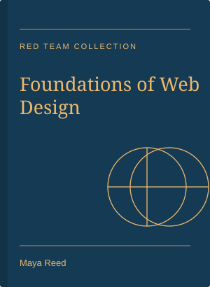
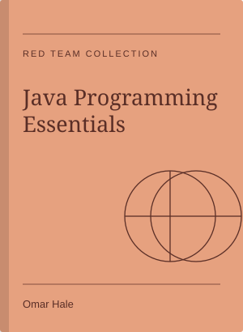
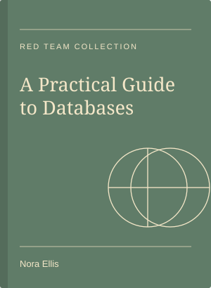
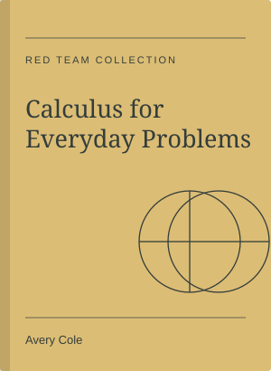
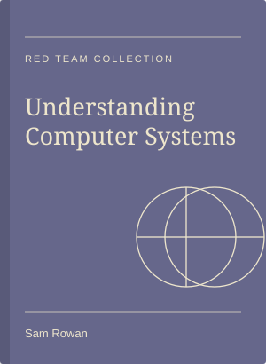

Book Details
These book descriptions are fictional examples for the project.

BK001 - Foundations of Web Design
Author: Maya Reed
Category: Computing | Year: 2024
Shelf: C-01 | Status: Available
An introduction to HTML, CSS, forms, and website layout.
Open the borrowing form and choose BK001.

BK002 - Java Programming Essentials
Author: Omar Hale
Category: Computing | Year: 2023
Shelf: C-02 | Status: Borrowed
Basic Java topics such as objects, arrays, and inheritance.
Open the borrowing form and choose BK002.

BK003 - A Practical Guide to Databases
Author: Nora Ellis
Category: Computing | Year: 2024
Shelf: C-03 | Status: Available
An introduction to tables, keys, and relationships in databases.
Open the borrowing form and choose BK003.

BK004 - Calculus for Everyday Problems
Author: Avery Cole
Category: Mathematics | Year: 2022
Shelf: M-01 | Status: Available
Practice topics about limits, derivatives, and integrals.
Open the borrowing form and choose BK004.

BK005 - Understanding Computer Systems
Author: Sam Rowan
Category: Computing | Year: 2025
Shelf: C-04 | Status: Overdue
Basic ideas about computer memory and machine instructions.
Open the borrowing form and choose BK005.
BK006 - Research and Academic Writing
Author: Lina Hart
Category: Study skills | Year: 2023
Shelf: S-01 | Status: Available
A guide to finding information and writing academic reports.
Open the borrowing form and choose BK006.